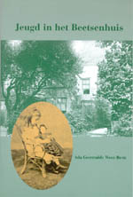
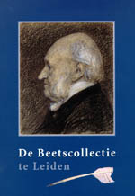

Beets 1903 - 2003
Tentoonstelling van 13 maart tot 11 mei 2003 in de Universiteitsbibliotheek
Samenstelling: C.J. Stiekema en A.Th. Bouwman
Tentoongestelde stukken
Inleiding
Op 13 maart 1903 overleed Nicolaas Beets: dominee-dichter, auteur van de onvergetelijke Camera Obscura, maar ook van thans bijna vergeten werken als Stichtelijke uren en Verscheidenheden meest op letterkundig gebied. Zijn honderdste sterfdag wordt in Leiden uitgebreid herdacht. Als Leids student schreef Beets immers enkele van zijn bekendste werken in de Breestraat, waar hij toen op kamers woonde. Daarom is op 15 maart een gedenksteen in de gevel van dit pand onthuld (Breestraat 114C).
In de Bibliotheek van de Maatschappij der Nederlandse Letterkunde (als langdurig bruikleen onderdeel van de Universiteitsbibliotheek Leiden) berust bovendien de belangrijke collectie papieren en drukken uit het bezit van Beets, waarvan thans een rijk geïllustreerde inventaris wordt gepubliceerd: De Beetscollectie te Leiden.
Met de tentoonstelling ‘Beets 1903 – 2003’ presenteert de Universiteitsbibliotheek Leiden een selectie van stukken uit het archief en de boekerij van deze prominente negentiende-eeuwer, aangevuld met exponaten uit andere delen van haar bezit (met name het archief van de Haarlemse uitgeverij De Erven F. Bohn).
Het Beetsarchief is een familiearchief: het bevat ook stukken van de kinderen Beets, zoals een folioschrift met de mémoires van Ada Beets, die ter gelegenheid van Beets’ honderdste sterfdag zijn uitgegeven. Hoe was het om als jongste dochter van de beroemde literator en professor op te groeien in het grote huis aan de Boothstraat te Utrecht? Het antwoord op deze vraag geeft Jeugd in het Beetsenhuis. Allerlei facetten van het leven in de laatste decennia van de negentiende eeuw worden gezien door de ogen van Ada, die geboren werd in 1871.
|  |  |
| volgende pagina | |